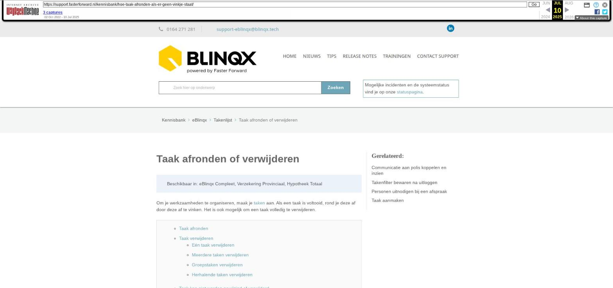

Taak afronden of verwijderen

Tekstinhoud
Taak afronden of verwijderen
Beschikbaar in: eBlinqx Compleet, Verzekering Provinciaal, Hypotheek Totaal
Om je werkzaamheden te organiseren, maak je taken aan. Als een taak is voltooid, rond je deze af door deze af te vinken. Het is ook mogelijk om een taak volledig te verwijderen.
Taak afronden
Taak verwijderen
Eén taak verwijderen
Meerdere taken verwijderen
Groepstaken verwijderen
Herhalende taken verwijderen
Taak kan niet worden gewijzigd of verwijderd
Taak afronden
Als je een taak afvinkt, blijft deze als 'afgeronde taak' terug te vinden. Zo behoud je het overzicht van alle taken die zijn voltooid.
Een taak kan op 5 manieren worden afgevinkt:
Door op het "vinkje" vóór de taak te klikken
Door meerdere taken te selecteren en onderaan te klikken op 'Geselecteerde taken afvinken'.
Door een workflow actie die aan de taak vast zit –> wanneer er een workflow aan de taak is gekoppeld zal er een paars pijltje voor de taak staan. Klik hierop om een stap in de workflow te nemen om de taak af te ronden.
Door in de taak een registratie aan te maken en vervolgens te kiezen voor 'Opslaan en taak afvinken'.
Door in de taak een e-mail aan te maken en vervolgens te kiezen voor 'Verzenden en taak afvinken'.
Let op: een groepstaak moet eerst toegekend zijn een persoon/verantwoordelijke, voordat deze afgerond kan worden. Is de groepstaak niet toegekend dan zie je geen groen vinkje voor de taak staan.
De afgeronde taken kan je in de takenlijst terugzien door het filter 'Afgerond' op 'Afgerond' te zetten:
Taak verwijderen
Als je een taak verwijdert, wordt deze definitief verwijderd en is deze niet meer terug te vinden.
Het is mogelijk om één taak te verwijderen of meerdere taken tegelijk te verwijderen.
Eén taak verwijderen
Een taak verwijderen doe je door deze aan te vinken en te klikken op het rode kruisje of op de button 'Geselecteerde taken verwijderen'.
Meerdere taken verwijderen
Het verwijderen van meerdere taken tegelijk kun je doen door meerdere taken aan te vinken of door middel van het bovenste vakje alle taken in 1 keer te selecteren. Vervolgens kan je klikken op de button 'geselecteerde taken verwijderen'.
Let op! Het is niet mogelijk om de taken in 1 keer tegelijkertijd te verwijderen, wanneer de geselecteerde taken groepstaken en/of taken zijn die genodigden bevatten of herhalend zijn. Deze taken dienen individueel verwijderd te worden via het rode kruisje achter de taak.
Groepstaken verwijderen
Bij groepstaken kan je deze alleen voor de volledige groep verwijderen. Deze kan je niet in bulk verwijderen, maar moeten individueel verwijderd worden door middel van het rode kruisje.
Herhalende taken verwijderen
Ook herhalingstaken kan je verwijderen. Je krijgt dan verschillende keuzes:
Taak kan niet worden gewijzigd of verwijderd
In dit artikel leggen we uit waarom een taak/afspraak niet gewijzigd of verwijderd kan worden in de agenda.
Laatste update: 12 mei 2025
Was deze informatie nuttig?
Ja Nee